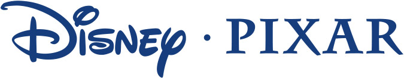
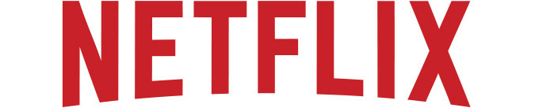
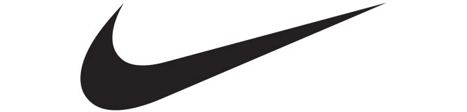

구글,
리추얼을 통해
조직의 혁신을
이끌다
성공한 기업은 반드시 자신들만의 조직문화를 가지고 있다. 거대 글로벌 기업 구글 역시 다르지 않다. 작지만 끊임없이 변화하려는 다양한 리추얼을 통해 서로 협력하고 창의적인 발상을 발휘할 수 있도록 돕는다.
2022 봄호 Vol.67
구글,
리추얼을 통해
조직의 혁신을
이끌다
성공한 기업은 반드시 자신들만의 조직문화를 가지고 있다. 거대 글로벌 기업 구글 역시 다르지 않다. 작지만 끊임없이 변화하려는 다양한 리추얼을 통해 서로 협력하고 창의적인 발상을 발휘할 수 있도록 돕는다.
프로펠러 모자를 쓴
뉴글러
NOOGLER
이제 막 기업에 입사한 당신에게 누군가 ‘프로펠러 모자’를 쓰라고 한다면 어떨까? 아마 가장 먼저 당황스러운 마음이 들 것이다. 하지만 실제 이런 조직문화를 실천하는 기업이 있다. 바로 직장인들에게 꿈의 직장, 신의 직장이라고 불리는 세계 최고의 IT기업 구글이다. 구글에서는 새로 입사한 직원을 ‘뉴글러(New+Googler)’라고 부르며, ‘온 보딩(On Boarding)’이라는 적응기간을 주는데 이 기간 동안 뉴글러들은 ‘프로펠러 모자’를 쓴다. 신입사원을 환영하는 구글의 독특한 리추얼이다. ‘리추얼’이란 가치와 의미를 담아 반복적으로 하는 절차나 행동을 말하는데, 구글은 조직문화를 형성하고 조직을 강화하는 효과적인 수단으로 사용한다.
구글에서 프로펠러 모자를 썼다는 건 ‘신입’이라는 표시인데, 이는 인턴이든, 부서장이든 관계없이 모두가 써야 한다. 뉴글러들의 소속감을 부여하고, 긴장될 수 있는 입사 초기에 유쾌한 분위기를 조성해 조직 적응을 돕기 위함이다. 특히 이 신입이기에 질문이 많을 수밖에 없는데 이 모자를 쓰고 있는 그들은 누구에게나 질문을 할 수 있으며, 질문을 받은 기존 구글러들은 무엇이든 대답을 해줘야 한다. 더 나아가 프로펠러 모자는 ‘나는 새로 입사했기 때문에 모르는 것을 많이 물어볼 수 있다’는 의미이며, 이제 ‘구글러’가 됐다는 자부심까지 부여한다.
혁신을 장려하는
조직문화
FIRST PENGUIN AWARD
이처럼 구글은 기발한 조직문화를 바탕으로 다양한 리추얼을 실천하고 있는데, 그중 하나가 ‘아이디어 장례식’이다. 스페인 문화권의 ‘망자의 날’에서 아이디어를 얻은 것으로 직원들이 실현되지 못한
아이디어를 적어 관에 모아넣고 태우면서 이별을 고하는 행사다. 오랫동안 고민하고 노력한 아이디어를 버리는 것은 고안자 입장에서 무척 어려운 일이지만, 이런 과정을 통해 계속 혁신할 수 있도록 감정 밸런스를 조절을 하기 위한 것이다.
퍼스트 펭귄 어워드(First Penguin Award)라는 행사도 있다. 일명 ‘용감한 펭귄상’인데 퍼스트 펭귄은 선구자나 도전자라는 의미로, 무리에서 가장 먼저 바다에 뛰어드는 펭귄은 먹잇감을 구하거나 누군가에게 잡아 먹히거나 둘 중 하나다. 하지만 그 위험을 감수하고 가장 먼저 물에 뛰어들어 다른 펭귄도 바다에 뛰어들 수 있도록 독려한다. 이처럼 ‘용감한 펭귄상’은 리스크를 감수하는 것은 박수칠 만한 일이고, 조직 차원에서 남들이 하지 않는 새로운걸 시도하는 사람을 인정하며, 더 나아가 실패를 두려워하지 않는 조직문화를 만들어가고 있다.
최대한의 능력을
발휘할 수 있는
업무 환경
SOURCE PEER BONUS
이처럼 구글은 조직의 혁신을 장려하기 위해 실패에 좌절하지 않는 조직 분위기를 형성할 뿐 아니라, 유대감을 조성하고 팀 협업을 활성화하는 리추얼도 진행된다. 함께 일하는 동료가 특별한 협업을 선보였을 때 해당 동료에게 ‘피어 보너스(Peer Bonuses, 동료추천 보너스)’를 수여하는 것이 그중 하나다. 누구나 일 잘한 직원을 추천할 수 있고, 추천받은 직원은 보상을 받음으로써 성과를 인정받을 수 있다. 뿐만 아니라 해당 직원은 동료들에게 ‘감사인사(Thank you Note)’를 전할 수도 있다. 감사인사는 받는 사람과 쓰는 사람 모두에게 조직 가치를 내재화하고 서로를 존중하는 마음을 느끼게 한다. 또한 구글은 사내 프로그램으로 ‘내면 검색’이라는 명상 프로그램을 도입해 운영하는데, 단순한 스트레스 관리를 넘어 정서지능 계발과 리더십 향상을 중점으로 추구한다. 대부분 종교적 수행이나 건강관리 차원으로 인식하는 동양권과 달리 역량계발 차원으로 이뤄진다. 내면의 성찰을 통해 스트레스 극복 능력을 강화하고 이를 통해 창의력과 혁신적 사고를 얻고자 함이다. 이외에도 구글은 직원들이 새로운 아이디어를 낼 때, 이 아이디어가 제품이나 서비스로 실현됐을 때 어떻게 언론에 보도될지, 어떤 반응이 나올지 상상하고 작성하는 ‘미래 기사’라는 리추얼도 진행하는데 이를 통해 창의성과 더불어 문제 해결력을 가질 수 있도록 장려한다.
직원들이 다른 분야의 업무에 관심을 가질 경우, 이를 학습할 수 있는 업무 환경도 잘 마련돼 있다. 키워드를 알면 내부 서치 기능을 가진 플랫폼을 통해 사내에서 진행 중인 다양한 프로젝트와 코딩 프레젠테이션 자료 등을 볼 수 있다. 또한 함께 일하는 팀원들 및 타부서 팀원들의 업무 캘린더를 공유해 사내에서 어떤 프로젝트가 진행 중인지 알 수 있어, 조직 내 소속감을 가질 수 있다. 이처럼 구글은 최대한 많은 정보를 공유하고, 가능한 많은 기회를 주는 조직문화를 통해 직원들의 창의적 사고가 가능하도록 도와 구글의 혁신이 이어지도록 만들고 있다.
글로벌기업의 조직문화


